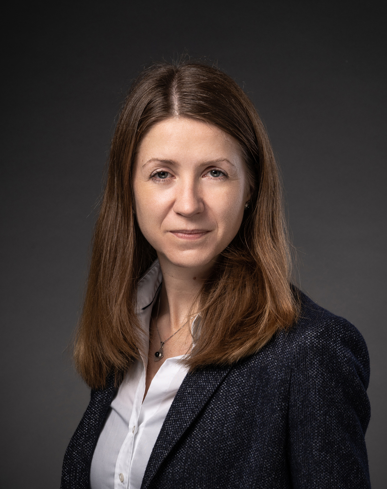

- Cognitive Vehicles Workshop // IROS 2019
- Home
- News
- Program
- Speakers
- Call for papers
- Organizers

Invited Speakers
| Speaker | Biography | Title/abstract |
|---|---|---|
| Applications | ||
| Michael Würtenberger is the vice president of E/E Architectures, Technologies and AI at BMW Group. Prior to that, he was vice president E/E system design and integration, driving dynamics. From 2013 to 2017, he was the magaing direction of BMW Car IT in Ulm. He received the diploma in electrical engineering and a PhD in automation engineering from Technical University of Darmstadt. | ||

|
Gustav Markkula is an Associate Professor at the Institute for Transport Studies, University of Leeds, United Kingdom. He is an engineer by training, and applies quantitative methods and models to the study of human behaviour and cognition in road traffic. He has spent more than a decade in the automotive industry (Volvo), as a systems engineer, project manager, and technical specialist, working on numerous research & development projects relating to driving safety, driver distraction, human-machine interfaces, and driver behaviour in general. During this time he also pursued a PhD (Chalmers University of Technology, Gothenburg, Sweden), on the topic of mathematical modelling of driver behaviour, to support virtual testing of automotive safety systems. In 2015 he joined the University of Leeds to further expand this research. He currently holds a UK EPSRC Early Career Fellowship of which the objective is to develop neurobiologically plausible models of road user interactions, to support development and testing of automated vehicles. | Why a neurocognitive understanding of human road users is needed to ensure safety and acceptance of automated vehicles |
| Learning | ||
| Raquel Urtasun is Uber ATG Chief Scientist and the Head of Uber ATG Toronto. She is also an Associate Professor in the Department of Computer Science at the University of Toronto, a Canada Research Chair in Machine Learning and Computer Vision and a co-founder of the Vector Institute for AI. Prior to this, she was an Assistant Professor at the Toyota Technological Institute at Chicago (TTIC), an academic computer science institute affiliated with the University of Chicago. She was also a visiting professor at ETH Zurich during the spring semester of 2010. She received her Bachelors degree from Universidad Publica de Navarra in 2000, her Ph.D. degree from the Computer Science department at Ecole Polytechnique Federal de Lausanne (EPFL) in 2006 and did her postdoc at MIT and UC Berkeley. She is a world leading expert in AI for self-driving cars. Her research interests include machine learning, computer vision, robotics, AI and remote sensing. Her lab was selected as an NVIDIA NVAIL lab. She is a recipient of an NSERC EWR Steacie Award, an NVIDIA Pioneers of AI Award, a Ministry of Education and Innovation Early Researcher Award, three Google Faculty Research Awards, an Amazon Faculty Research Award, two NVIDIA Pioneer Research Awards, a Connaught New Researcher Award, a Fallona Family Research Award and two Best Paper Runner up Prize awarded at CVPR in 2013 and 2017 respectively. She was also named Chatelaine 2018 Woman of the year, and 2018 Toronto's top influencers by Adweek magazine. e | ||

|
Professor Milford conducts interdisciplinary research at the boundary between robotics, neuroscience and computer vision and is a multi-award winning educational entrepreneur. His research models the neural mechanisms in the brain underlying tasks like navigation and perception to develop new technologies in challenging application domains such as all-weather, anytime positioning for autonomous vehicles. He is also one of Australia’s most in demand experts in technologies including self-driving cars, robotics and artificial intelligence, and is a passionate science communicator. He currently holds the position of Professor at the Queensland University of Technology, as well as Australian Research Council Future Fellow, Microsoft Research Faculty Fellow and Chief Investigator at the Australian Centre for Robotic Vision. | The natural kingdom has long served as an inspiration for roboticists working on both the hardware and software components of autonomous systems. In this talk I will provide a perspective on why we do this, the many dogmas in the field, and what from biological inspiration typically actually makes it onto a deployed system in the real world and why. |

|
Professor Dongheui Lee is Associate Professor of Human-centered Assistive Robotics at the TUM Department of Electrical and Computer Engineering. She is also director of a Human-centered assistive robotics group at the German Aerospace Center (DLR). Her research interests include human motion understanding, human robot interaction, machine learning in robotics, and assistive robotics. Prior to her appointment as Associate Professor, she was an Assistant Professor at TUM (2009-2017), Project Assistant Professor at the University of Tokyo (2007-2009), and a research scientist at the Korea Institute of Science and Technology (KIST) (2001-2004). After completing her B.S. (2001) and M.S. (2003) degrees in mechanical engineering at Kyung Hee University, Korea, she went on to obtain a PhD degree from the department of Mechano-Informatics, University of Tokyo, Japan in 2007. She was awarded a Carl von Linde Fellowship at the TUM Institute for Advanced Study (2011) and a Helmholtz professorship prize (2015). She is coordinator of both the euRobotics Topic Group on physical Human Robot Interaction and of the TUM Center of Competence Robotics, Autonomy and Interaction. | |
| Cognitive Architectures | ||
|  | Yulia Sandamirskaya is a Group Leader in the Institute of Neuroinformatics (INI) at the University of Zurich and ETH Zurich. Her group “Neuromorphic Cognitive Robots” develops neuro-dynamic architectures for embodied cognitive agents. In particular, she studies memory formation, motor control, and autonomous learning in spiking and continuous neural networks, realised in neuromorphic hardware interfaced to robotic sensors and motors. She has a degree in Physics from the Belorussian State University in Minsk, Belarus and Dr. rer. nat. from the Institute for Neural Computation in Bochum, Germany. She is the chair of EUCOG — the European Society for Cognitive Systems and the coordinator of the NEUROTECH project that supports and develops the neuromorphic computing community in Europe. | |
| Dr. Stewart is a Research Officer with the National Research Council of Canada, where he splits his time between developing computational neuroscience models of cognition and decision-making (with special emphasis on the basal ganglia), and developing software to run these models on a wide variety of neuromorphic hardware, including SpiNNaker, Braindrop, and Loihi. His initial training was as an engineer (B.A.Sc. in Systems Design Engineering, University of Waterloo, 1999), his masters involved applying experimental psychology on simulated robots (M.Phil. in Computer Science and Artificial Intelligence, University of Sussex, 2000), and his Ph.D. was on cognitive modelling (Ph.D. in Cognitive Science, Carleton University, 2007). He is also a co-founder of Applied Brain Research, a research-based start-up company based around using low-power hardware (neuromorphic computer chips) and adaptive neural algorithms. | In most neural network algorithms, the network weights are trained once, and then deployed with static, unchanging weights. This provides stable (and verifiable) performance, but does not allow the system to adapt to the particular circumstances of its situation. In contrast, here we show two situations (adaptive motor control and vehicle position prediction) where online learning of network weights can robustly improve performance. The learning algorithm used here is also a local learning rule, making it suitable for energy-efficient neuromorphic implementation. | |
| I would like to understand how embodied and situated nervous systems develop cognition. To do that, my colleagues and I have developed the theoretical framework of Dynamical Field Theory. In a set of close theory-experiment collaborations we validate the concept of the theory and systematically build an account of action, perception, and embodied cognition. Exemplary studies include multi-degree of freedom movements, learning of motor skills, perception of motion, working memory for action, space and visual features, sensory-motor decision making and the development of early cognition and motor behavior. In a second line of research we develop of autonomous robots inspired by these same theoretical principles. The main emphasis is on service robotics, in which autonomous robots interact with human users. I work toward that vision as a researcher, as group leader, and collaborator. I also teach as a professor, and am the director of the Institute of Neuroinformatics (INI) of the Ruhr-Universität Bochum. | ||
| Perception | ||

|
Davide Scaramuzza is professor of robotics and perception at both departments of Neuroinformatics (University of Zurich & ETH Zurich) and Informatics (University of Zurich), where he does research at the intersection of robotics and computer vision. He did his PhD in robotics and computer vision at ETH Zurich (with Roland Siegwart) and a postdoc at the University of Pennsylvania (with Vijay Kumar and Kostas Daniilidis). From 2009 to 2012, he led the European project sFly, which introduced the PX4 autopilot and pioneered visual-SLAM–based autonomous navigation of micro drones. From 2015 to 2018 he was part of the DARPA FLA program. For his research contributions, he was awarded the prestigious IEEE Robotics and Automation Society Early Career Award, the Misha Mahowald Neuromorphic Engineering Award, the SNSF-ERC Starting Grant (equivalent to NSF Career Award), Google, Intel, Qualcomm, and KUKA awards, as well as several conference and journal paper awards (e.g., IEEE Trans. of Robotics Best Paper Award 2017). He coauthored the book “Introduction to Autonomous Mobile Robots” (published by MIT Press) and more than 100 papers on robotics and computer vision. In 2015, he cofounded a venture, called Zurich-Eye, dedicated to visual-inertial navigation solutions for mobile robots, which today is Facebook-Oculus Zurich. He was also the strategic advisor of Dacuda, an ETH spinoff dedicated to inside-out VR solutions, which today is Magic Leap Zurich. Many aspects of his research have been prominently featured in the popular press, such as The New York Times, Discovery Channel, BBC, IEEE Spectrum, MIT Technology Review. | Event-based Cameras: Challenges and Opportunities |

|
||
| Robert Haschke received the diploma and PhD in Computer Science from the University of Bielefeld, Germany, in 1999 and 2004, working on the theoretical analysis of oscillating recurrent neural networks. Since then, his work focuses more on robotics, still employing neural methods whereever possible. Robert is currently heading the Robotics Group within the Neuroinformatics Group, striving to enrich the dexterous manipulation skills of our two bimanual robot setups through interactive learning. His fields of research include neural networks, cognitive bimanual robotics, grasping and manipulation with multi-fingered dexterous hands, tactile sensing, and software integration. | ||